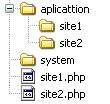
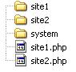
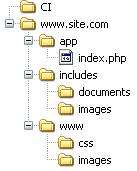

Multiplos Sites Com CodeIgniter
Entrei em uma empresa recentemente, e acredito que conquistei a vaga por já ter trabalhado com CodeIgniter antes. Pra quem não sabe o CodeIgniter é um framework PHP com estrutura em MVC, o que deixa tudo mais organizado. E foi a ferramenta escolhida pela empresa para organizar os seus bagunçados projetos.
Apesar de já ter trabalhado com CodeIgniter antes, nunca havia me envolvido tanto, entrado em suas configurações principais e etc. Me limitava ao superficial para fazer funcionar. Controler, consulta no banco pelo Model, chama a view para mostrar o conteúdo e fechou. No máximo chamar uma library.
Porém pediram para mim e meu amigo Ronie, que já tinhamos experiência com a ferramenta, para deixar ela configurada para múltiplos sites. Já tinhamos visto isso antes. Vamos lá! Pesquisar no segundo cérebro (Google)!
Um Wiki no site oficial propõe duas maneiras para se trabalhar com múltiplos sites em CodeIgniter. A primeira seria criando as pastas principais dos sites dentro de Application (Application é onde fica a estrutura do site). Funciona como se cada pasta dessa, fosse um application. Logo, você deve replicar o conteúdo da pasta application que vem por padrão no CodeIgniter para cada site que for ter, renomeando para um nome de acordo (No exemplo abaixo a pasta site1 e a pasta site2).

A segunda forma é bem similar. Você tiraria as pastas principais de dentro do Application, trazendo para a mesma raiz do system(system é onde fica o core do codeigniter).

Outro passo que a documentação pede, para as duas formas, é replicar o arquivo “index.php” (Nos exemplos acima representados por site1.php e site2.php), que vem por padrão na raiz do codeigniter, junto com a pasta system e a pasta application.
Deve se fazer essa réplica, para cada site/pasta principal, e editar a variável $application_folder, que devem conter o caminho para sua respectiva pasta principal. Nos exemplos do Wiki ele renomeia cada index para sua pasta do site, para ter como acessar cada site. que ficaria: http://www.seudominio.com/site1*** ou http://www.seudominio.com/site2***
Porém, precisavamos de outra coisa.
Foi pedido que separacemos a pasta dos arquivos css’s para fora da aplicação do CodeIgniter. Para que apenas o pessoal da programação tivesse acesso a isso. O pessoal do Layout (do CSS) não interferiria na Aplicação.
Depois de algumas idéias, rodando o tal arquivo “index.php” veio toda a solução. Simples !
Nesse arquivo é setado o endereço da pasta System, e, como já vimos antes, da pasta Application. Putz.. Ai fica tudo muito fácil.
Jogamos uma pasta system na raiz do servidor, e renomeamos para CI.
Para cada site, fizemos uma pasta principal (para onde o domínio é apontado). Dentro dessa pasta principal colocamos a Réplica do Application, com o nome de “app”, Uma pasta “www”, para os CSS’s e Imagens de Layout, e por último uma pasta “includes”, para Uploads do usuário como fotos de notícias, PDF’s e etc. Ficou como tento demonstrar abaixo:

Não queriamos deixar as cópias dos “index.php” soltas para fora de tudo, como o Wiki deixa a entender. Colocamos dentro de cada Pasta Principal. O que facilitou no sentido da URL, pois geralmente quando você entra em uma pasta pelo browser, ele procura por um “index” não é mesmo ? Então para acessar cada site, é só entrar na pasta principal. Ele pega o index.php, e faz todo o Trabalho Hard Mode.**
Nossa URL então, ficou apenas com o dominio do site, que é apontado para pasta do site. Como cada pasta tem o index, fechou.*
*
Na edição dos arquivos “index.php”, setamos a variável $system_folder da seguinte maneira:
$system_folder = "../CI";
Dois pontos para quem não sabe, volta um diretório. e CI, foi o nome que demos para nossa pasta system. Resumindo: Volta um e entra na pasta CI
Apontamos a variável $application_folder para nossa réplica da pasta Application, que é a pasta app no exemplo acima.
$application_folder = "app";
E isso resolve tudo. Ou seja, Podemos fazer a organização do nosso projeto para múltiplos sites como achar melhor. É só editar o cara que manda em tudo, que é o arquivo “index.php”, da maneira correta.
Confira um exemplo passo a passo, clicando aqui.
Em breve mais posts sobre CodeIgniter. Valeu !!!